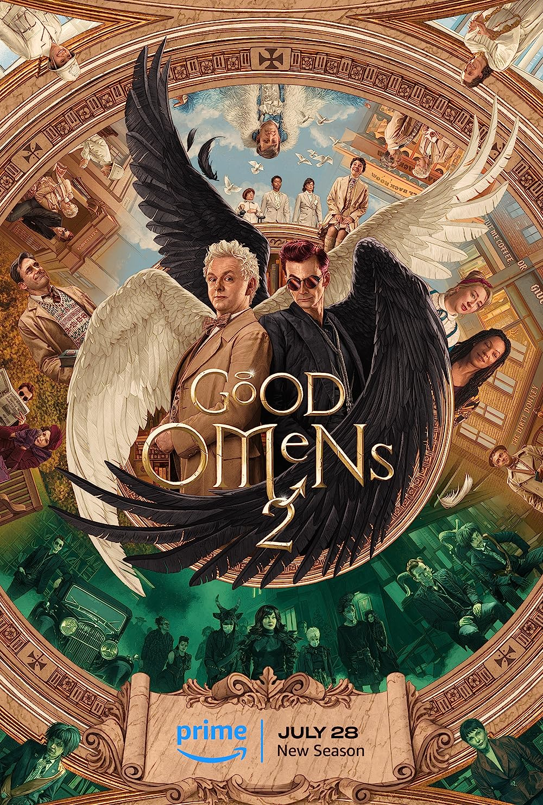

Segunda Temporada de 'Good Omens' Promete Mais Risos e Aventuras Sobrenaturais
Os fãs da série de televisão "Good Omens" têm motivo para comemorar, pois a aguardada segunda temporada da adorada adaptação do romance de Neil Gaiman e Terry Pratchett está prestes a chegar às telas. Com sua combinação única de humor irreverente, elementos sobrenaturais e uma narrativa envolvente, a série conquistou uma base de fãs fiel durante sua primeira temporada, e a segunda promete levar os espectadores a uma nova jornada repleta de risos e aventuras.
Good Omens: Uma Recapitulação Rápida
Para quem não está familiarizado com a trama, "Good Omens" conta a história de um anjo chamado Aziraphale (interpretado por Michael Sheen) e um demônio chamado Crowley (interpretado por David Tennant), que formam uma aliança improvável para tentar impedir o Apocalipse e a ascensão do Anticristo. A série é conhecida por sua abordagem única sobre o bem e o mal, combinando elementos religiosos com um senso de humor satírico e muita ação sobrenatural.
A Nova Temporada: O Que Esperar
A segunda temporada de "Good Omens" promete trazer mais da dinâmica hilária entre Aziraphale e Crowley, enquanto eles continuam a desafiar as expectativas e a questionar sua própria natureza. Os criadores da série, Neil Gaiman e a equipe de produção, prometem expandir o mundo sobrenatural que já conhecemos, apresentando novos personagens intrigantes e situações cómicas ainda mais elaboradas.
Além disso, a nova temporada deve aprofundar os arcos dos personagens secundários, dando aos espectadores a oportunidade de explorar mais a fundo o universo rico e complexo que foi estabelecido na primeira temporada. Enquanto alguns mistérios pendentes serão resolvidos, outros surgirão, mantendo os espectadores ansiosos por cada novo episódio.
O Legado de "Good Omens"
"Good Omens" ganhou destaque por sua abordagem única sobre a espiritualidade, o destino e a amizade, tudo isso envolto em um pacote recheado de piadas inteligentes e situações hilariantes. A primeira temporada foi elogiada tanto por fãs quanto pela crítica, com muitos elogios direcionados às performances carismáticas de Sheen e Tennant. A segunda temporada é esperada para manter esse legado, continuando a explorar temas profundos enquanto mantém o público rindo.
Conclusão
À medida que a segunda temporada de "Good Omens" se prepara para encantar os espectadores mais uma vez, os fãs podem esperar uma dose saudável de aventuras sobrenaturais, risos e momentos de reflexão. A série continua a provar que é possível combinar elementos fantásticos com um olhar aguçado sobre a natureza humana, resultando em uma experiência televisiva única e memorável. Com seu elenco talentoso, roteiro afiado e produção de alta qualidade, "Good Omens" está pronta para mais uma vez conquistar os corações e mentes dos espectadores ávidos por uma jornada cheia de diversão e emoção.